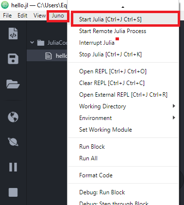

¡Hola Mundo!
El siguiente es un pequeño tutorial para crear
un proyecto de Julia e imprimir tu primer ¡Hola Mundo!.
1.- Para crear un proyecto nuevo primero se debera crear una carpeta nueva en el directorio que quieras.
2.- Posterior a crear una carpeta nueva deberemos abrir dicha carpeta en Atom.
3.- Ahora deberemos iniciar una sesión de Julia en Atom, para ello daremos clic en Juno > Start Julia.

4.- Procedemos a crear un nuevo archivo que contendra código
en lenguaje Julia, para ello daremos clic derecho sobre la carpeta
del proyecto y daremos clic en "New file".
5.- En el cuadro de texto que aparecera escribiremos el nombre
que queremos que tenga el archivo. El nombre puede ser cualquiera
pero es importante que tenga una extensión ".jl", para que
el contenido del archivo sea reconocido como código Julia.
6.- En la pestaña que se abrio escribimos “println("hello world")”.
7.- Ahora procederemos a ejecutar el código, para ello
daremos clic al icono de "Play" que esta en la barra lateral izquierda.
8.- Veremos la impresión en el REPL. (Es posible que tengamos
que presionar el botón mas de una vez si no vemos la impresión en el REPL)